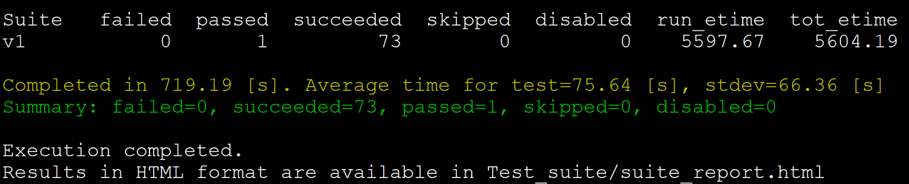

Download and Install
Download
Download
version 9.4.2of abinit.
wget https://www.abinit.org/sites/default/files/packages/abinit-9.4.2.tar.gz
小技巧
One should also download the recommended ABINIT Fallbacks
Download
Fallbacksof abinit-9.4.2
Compile
Before compile abinit package, one should create a installation direction and copy the abinit and wannier90 to this direction. Next, one should build a tarballs by following command.
mkdir -p ~/.abinit/tarballs
Move the packages of above download (exclude wannier90) to tarballs.
Compile wannier90
Unpack and configure wannier90. This can be done by copy/pasting the following lines:
tar zxvf wannier90-2.0.1.1.tar.gz && \
cd wannier90-2.0.1.1 && \
./configure FC=mpiifort CC=mpiicc \
prefix=/opt/software/wannier90-2.0.1.1/build/ && \
make && \
make install
Compile abinit
Create configure file compile.sh
./configure FC=mpiifort CC=mpiicc \
--prefix=/opt/software/abinit-9.4.2/build \
--enable-mpi-io=yes \
--with-mpi=/opt/intel/impi/2019.9.304/intel64 \
--enable-mpi-inplace=yes \
--enable-openmp=yes \
--enable-bse-unpacked=yes \
--enable-gw-dpc=yes \
--with-wannier90=/opt/software/wannier90-2.0.1.1/build
configure abinit
bash compile.sh
compile fallbacks by following commands
cd fallbacks && bash build-abinit-fallbacks.sh
edit the compile.sh
./configure FC=mpiifort CC=mpiicc \
--prefix=/opt/software/abinit-9.4.2/build \
--enable-mpi-io=yes \
--with-mpi=/opt/intel/impi/2019.9.304/intel64 \
--enable-mpi-inplace=yes \
--enable-openmp=yes \
--enable-bse-unpacked=yes \
--enable-gw-dpc=yes \
--with-wannier90=/opt/software/wannier90-2.0.1.1/build \
with_libxc=/opt/software/abinit-9.4.2/fallbacks/install_fb/intel/19.1/libxc/4.3.4 \
with_hdf5=/opt/software/abinit-9.4.2/fallbacks/install_fb/intel/19.1/hdf5/1.10.6 \
with_netcdf=/opt/software/abinit-9.4.2/fallbacks/install_fb/intel/19.1/netcdf4/4.6.3 \
with_netcdf_fortran=/opt/software/abinit-9.4.2/fallbacks/install_fb/intel/19.1/netcdf4_fortran/4.5.2 \
with_xmlf90=/opt/software/abinit-9.4.2/fallbacks/install_fb/intel/19.1/xmlf90/1.5.3.1 \
with_libpsml=/opt/software/abinit-9.4.2/fallbacks/install_fb/intel/19.1/libpsml/1.1.7
configure abinit
bash compile.sh
compile abinit
make -j<n> && make install
test abinit
./runtests.py v1 -j4
The test results are as follows.
